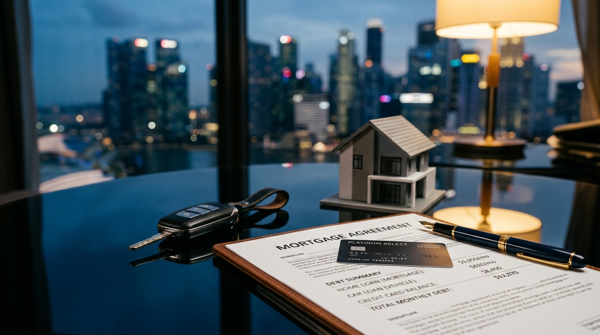

The MAS 4% Stress Test: How It Affects Your Home Loan in Singapore (2026)
Introduction: It Is Not Just About Today’s Rate
When most Singaporeans begin their property journey, the first question they ask is simple: “What is the current interest rate?” It is a reasonable starting point. In Q1 2026, fixed-rate packages from major banks range between 1.4% and 1.6% per annum — varying slightly by loan quantum — historically attractive figures that make ownership feel well within reach.
But securing a mortgage in Singapore is not purely a matter of locking in a competitive rate today. Before any bank will approve your loan, the Monetary Authority of Singapore (MAS) requires that your affordability be assessed against a significantly higher benchmark: the 4% stress test floor rate. This single regulatory requirement shapes how much you can borrow, which properties are within your budget, and how your existing financial commitments affect your options.
This guide breaks down exactly how the stress test works, what TDSR and MSR mean for you in practical terms, and why understanding these figures before you make an offer is one of the most important steps any buyer can take in 2026.
What Is the MAS 4% Stress Test?
The MAS stress test is a mandatory affordability calculation that all regulated financial institutions in Singapore must apply when assessing a residential property loan application. Rather than computing your monthly repayment obligation at the rate you are actually offered, the bank is required by MAS to calculate whether you could still comfortably service the loan at whichever is higher — your contracted interest rate, or 4.0% per annum.
In a low-rate environment, this distinction is decisive. If you are offered a rate of 2.2%, the bank does not assess your affordability at 2.2%. It runs the numbers at 4.0% — nearly double — and your borrowing capacity is determined by that higher figure.
Why Does MAS Use a 4% Floor?
The rationale is one of systemic prudence. Singapore’s property market has witnessed several interest rate cycles, and MAS introduced the stress test floor to ensure that borrowers are not approved for loans they would struggle to repay if rates rise to more historically normal levels. The regulator is, in effect, asking: “If conditions were less favourable, could this borrower still meet their obligations?”
For a S$600,000 loan over 30 years, the difference is tangible. At 2.2%, the monthly repayment is approximately S$2,285. At 4.0%, that same loan costs approximately S$2,864 per month — a difference of S$579 every single month. It is this higher figure that MAS requires banks to use when verifying that your debt ratios remain within regulatory caps.
Understanding this distinction allows you to enter negotiations and property viewings with an accurate picture of your real borrowing limit, rather than an optimistic one that may not survive the bank’s credit assessment.
TDSR vs MSR: What Each Ratio Means for You
Once the stress-tested monthly repayment is calculated, MAS requires it to be assessed against two separate ratio thresholds, depending on the property type you are purchasing.
Total Debt Servicing Ratio (TDSR) — Applies to All Properties
The Total Debt Servicing Ratio (TDSR) measures the proportion of your gross monthly income that goes towards servicing all debt obligations combined. This includes your new mortgage, any outstanding car loan, personal loans, credit card instalments, student loans, and any other credit facilities where a minimum monthly payment is required.
MAS caps the TDSR at 55% of gross monthly income. If your gross income is S$8,000 per month, the maximum allowable total monthly debt repayment — calculated at the stress-test rate — is S$4,400. Every dollar already committed to existing debts directly reduces how much of that S$4,400 can be allocated to a new mortgage.
The TDSR framework applies to all residential property types in Singapore: HDB flats, executive condominiums, private condominiums, and landed property alike. There is no exemption.
Mortgage Servicing Ratio (MSR) — HDB Flats and Executive Condominiums Only
For purchasers of HDB flats and executive condominiums financed with a bank loan, an additional, stricter ratio applies: the Mortgage Servicing Ratio (MSR). The MSR caps the monthly mortgage repayment alone at 30% of gross monthly income.
Using the same S$8,000 income example, this means the mortgage repayment — again, stress-tested at 4.0% — cannot exceed S$2,400 per month. At a 4% stress rate over 30 years, this translates to a maximum loan quantum of approximately S$503,000. For buyers of new BTO flats or resale HDB properties using a bank loan, the MSR is frequently the binding constraint rather than the TDSR.
It is worth noting that the MSR and TDSR must both be satisfied simultaneously when purchasing an HDB flat or executive condominium with a bank loan. Passing one is not sufficient; your repayment figures must clear both thresholds at the stress-test rate.
How Existing Debts Reduce Your Maximum Loan
This is the area where many aspiring homeowners encounter a rude surprise. A car loan, a personal credit line, or even the minimum payment obligations on credit card balances are all factored into your TDSR calculation. The impact can be substantial.

Existing commitments — car loans, credit cards, personal lines — all eat into your TDSR headroom before a single dollar of mortgage is counted.
The Car Loan Effect
Consider a buyer with a gross monthly income of S$10,000 and a car loan carrying a monthly repayment of S$1,200. Their TDSR ceiling is S$5,500 (55% of S$10,000). With S$1,200 already spoken for by the car loan, only S$4,300 per month remains available for mortgage servicing under the TDSR framework. At a 4% stress rate over 30 years, S$4,300 per month supports a loan of approximately S$899,000 — considerably less than the S$1,151,000 the same buyer could have accessed without the car commitment.
Credit Card Minimum Payments
Credit card debt is included in the TDSR calculation at 5% of the outstanding balance each month. A S$20,000 outstanding balance therefore adds S$1,000 to your monthly debt obligations in the bank’s eyes, even if you routinely pay more than the minimum. Clearing credit card balances before applying for a mortgage is one of the most straightforward ways to improve your assessed borrowing capacity.
Planning Ahead
If you are planning a property purchase within the next 12 to 24 months, a proactive debt review is strongly advisable. Settling outstanding credit facilities, timing the end of a car hire-purchase agreement, or restructuring personal loans ahead of a mortgage application can meaningfully shift your ceiling — sometimes by tens of thousands of dollars in loan quantum.
For a broader comparison of your financing options before committing to a bank loan, look out for our upcoming article on HDB Loans vs Bank Loans: Which Is Right for You in 2026? — where we break down the HDB concessionary rate, flexibility, and exit costs side by side.
You Do Not Need to Do This Maths Manually
The interplay between the 4% stress test, TDSR, MSR, and existing debt obligations involves several layers of calculation — and making an error at the research stage can mean either talking yourself out of a property you could actually afford, or worse, making an offer on one you cannot. Neither outcome serves you well.
The good news is that you can check your exact position in seconds without a spreadsheet or a financial background. The Nexus Mortgage Calculator automatically applies the MAS 4% stress-test rate to your income and inputs, computing your real TDSR and MSR limits instantly. Enter your purchase price, down payment, income, and tenure — and the calculator tells you precisely where you stand against both regulatory thresholds before you speak to a single bank.
Understanding the rules of the game before you sit down at the table is not just good preparation — in Singapore’s property market, it is the difference between a confident offer and a costly misstep.
Check Your TDSR & MSR in Seconds
Use the free Nexus Mortgage Calculator to see exactly how much you qualify for — stress-tested at the MAS 4% floor, instantly.
Open the Calculator →Prefer a personal review? WhatsApp Dan Ler at +65 8752 0859 for a free, no-obligation portfolio assessment. Banks pay our fee — you pay nothing.
Nexus Mortgage SG is an independent mortgage advisory in Singapore. This article is for general informational purposes and does not constitute financial advice. Figures are illustrative and based on conditions as of April 2026. MAS guidelines are subject to change. Please consult a qualified mortgage adviser before making any financial decisions. For official TDSR and MSR guidelines, visit MAS: TDSR for Property Loans. For HDB loan eligibility, visit HDB: Flat Eligibility (HFE Letter). For CPF usage in housing, visit CPF: Using Your Savings for Housing.